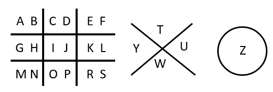
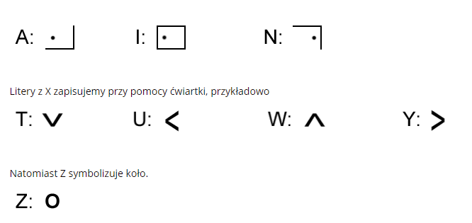

Czekoladka
Czekoladka w całości opiera się na zastępowaniu liter symbolem graficznym. Jej nazwa także nie jest przypadkowa. "Tabliczkę czekolady" należy pozbawić kilku dolnych pasków, tak, żeby został kwadrat składający się z dziewięciu kostek 3×3.
W poszczególne kostki „czekolady 3×3” wpisujemy kolejno po dwie litery alfabetu (pomijając polskie znaki). Dla pozostałych liter, nie mieszcących się w tabelce, rysujemy obok duży znak "X" oraz koło.
Aby zapisać konkretną literę szkicujemy układ kratki w której się znajduje, a następnie zaznaczamy kropką jej pozycję w danej kratce.

Całkiem prosta sprawa!